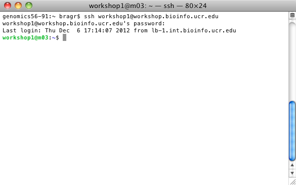
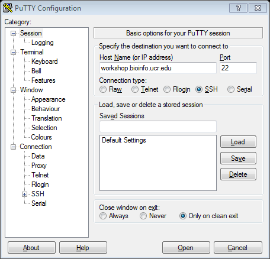
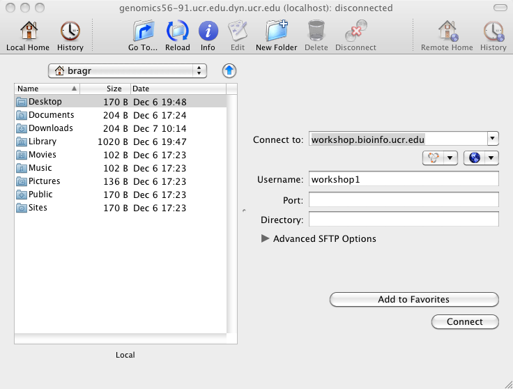
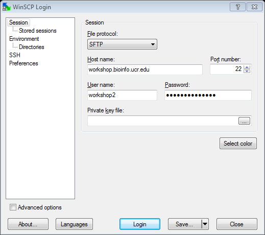

Linux Part I
Linux Essentials
Grant Brady -
gbrad001@ucr.edu
About Me
Over 5 years of diverse IT experience
Linux and enterprise systems for the 3 years
Computer science background
Worked here for about 6 months
What is Linux?
Operating System
Unix like
Open Source under the GNU GPL
Runs on our cluster and most others
Getting Access
SSH for doing work
SFTP or SCP for transferring files
Credentials (Account Info)
User: workshop(1-32)
Password: IIGBworkshop12
Host: workshop.bioinfo.ucr.edu
SSH (Mac)
SSH support built in
Terminal
Found in Applications > Utilities
iTerm 2
Run 'ssh <username>@<host>'

SSH (Windows)
PuTTY
Connection > SSH
Fill Host field
PuTTY will prompt for username and password
Optionally, save the session

Demo
SCP/SFTP (Mac)
Fugu
"Connect to:" is where the host goes.

SCP/SFTP (Windows)
WinSCP
Fill in all details
Many people also like Filezilla

Demo
Using Linux
Linux is case sensitive
Avoid spaces in names
Current Working Directory
Getting Around
Where am I now? (pwd)
What is here? (ls)
What is here with details? (ls -l)
What is hidden? (ls -a)
How big is it? (ls -h and du -sh)
How do I make a directory (mkdir)
Getting Around Cont.
How do I get places? (cd)
Special Locations
~ - Home
.. - Up one directory
. - This directory
Relative vs. Full Path
Demo
Moving Things Around
Copy just files (cp)
Copy files AND directories (cp -R)
Moving things (mv)
Copying a lot of things (rsync)
Other Useful Commands
Up/Down Keys
Tab completion
History search (CTRL+r)
grep
-i flag (case insensitive)
-v flag (exclude)
--count
top (or htop)
Other Useful Commands Cont.
ps (-ef)
wc
wget
less
tar -xzf
gunzip
man
Demo
Text Editors
nano (Simple, basic. We'll be using this)
vim (One of the standard editors, advanced)
emacs (Another standard, also advanced)
Demo
Pipes and Redirects
Change where output goes
Change where input comes from
Combine simpler commands to form complex tasks
Pipe (|)
Redirect (>)
Redirect and append (>>)
Input from file (<)
Demo
Getting Help
man and --help/-h
support@biocluster.ucr.edu
Google
Online Forums
Mailing lists
Exersises
http://manuals.bioinformatics.ucr.edu/home/linux-basics#TOC-Exercises